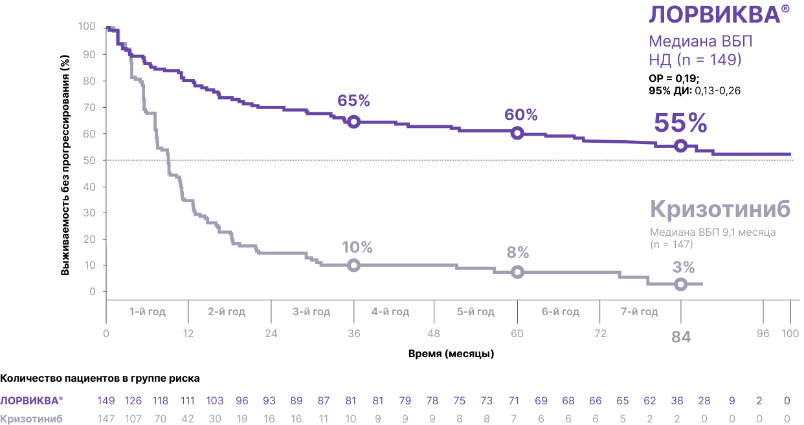
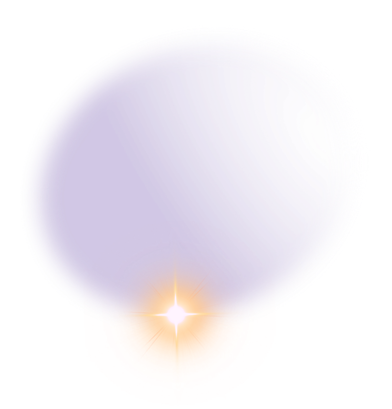
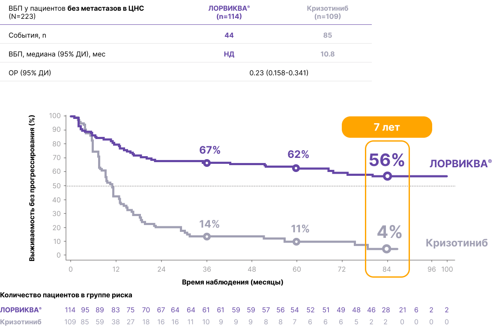
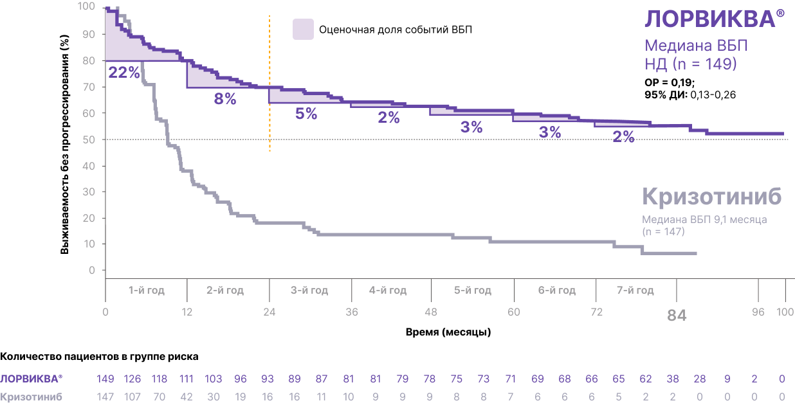
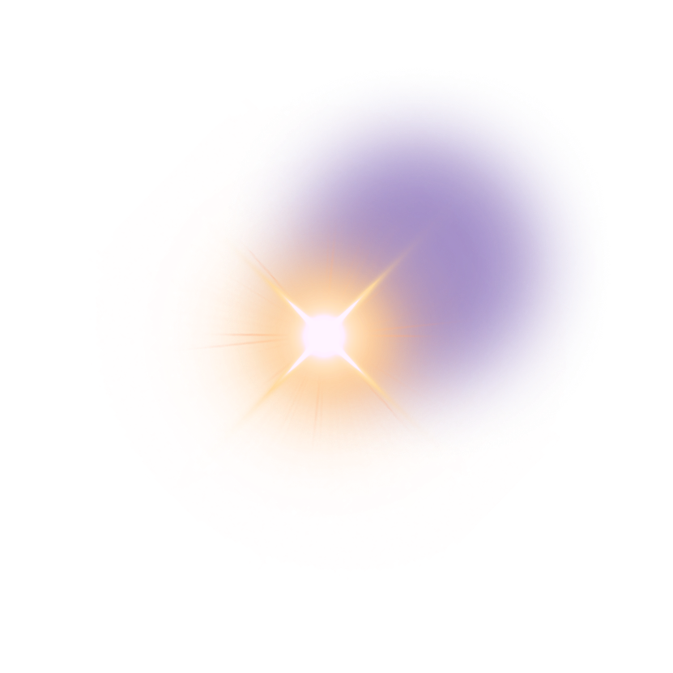
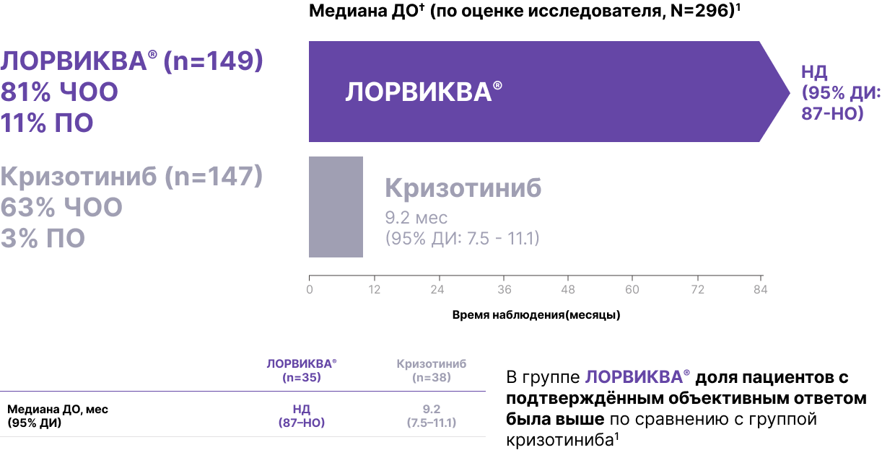

Эффективность препарата ЛОРВИКВА®
Общая эффективность
Эффективность в ЦНС
ЛОРВИКВА® в 1-й линии лечения ALK+ мНМРЛ демонстрирует ВБП >7 лет — самая длительная ВБП, когда‑либо зарегистрированная при распространённом раке лёгкого1*†
55%
пациентов на препарате ЛОРВИКВА® были живы без признаков прогрессирования к 7 годам1
Выживаемость без прогрессирования по оценке исследователя (N = 296)1

Адаптировано из Shaw AT, et al. Ann Oncol. 2026; doi: https://doi.org/10.1016/j.annonc.2026.05.692.
Дата прекращения сбора данных: 31 октября 2025 г.1 *Первичная конечная точка ВБП была достигнута по оценке BICR в первичном анализе исследования CROWN (медиана наблюдения ВБП: 18,3 месяца для пациентов, получавших препарат ЛОРВИКВА®, и 14,8 месяца для пациентов, получавших кризотиниб); медиана ВБП не поддавалась оценке для группы терапии препаратом ЛОРВИКВА®. Для подтверждения эффекта препарата ЛОРВИКВА® по сравнению с кризотинибом при более длительном наблюдении ВБП был проведен незапланированный последующий анализ на основе данных по оценке исследователя при медиане наблюдения примерно 83 месяцев для пациентов, принимавших препарат ЛОРВИКВА® (77,2 месяцев для пациентов, принимавших кризотиниб). Все конечные точки, связанные с опухолевым процессом, о которых сообщалось в 7-летнем анализе, оцениваются исследователем1,2. † ОГРАНИЧЕНИЯ: Результаты этого незапланированного, основанного на данных по оценке исследователя анализа носят описательный характер. Формальная проверка гипотез не проводилась, учитывая, что конечная точка ВБП ранее была достигнута в первичном анализе исследования CROWN. Результаты представлены в описательной форме.
Узнать больше об исследовании
CROWN

56%
пациентов без мтс в ЦНС исходно на препарате ЛОРВИКВА® были живы без признаков прогрессирования к 7 годам1

53%
пациентов с мтс в ЦНС исходно на препарате ЛОРВИКВА® были живы без признаков прогрессирования к 7 годам1
Дата среза данных: 31 октября 2025 года.1 *ОГРАНИЧЕНИЯ: Результаты данного незапланированного анализа (оценка исследователя) являются описательными. Формальное тестирование гипотез не проводилось, поскольку первичная конечная точка ВБП была достигнута ранее; результаты представлены в описательном формате.1
Отсутствие прогрессирования или смерти в первые 2 года ассоциировалось с 79% вероятностью выживаемости без прогрессирования к 7 годам1*†‡
Вероятность выживаемости без прогрессирования по оценке исследователя (N = 296)1

Адаптировано из Shaw AT, et al. Ann Oncol. 2026; doi: https://doi.org/10.1016/j.annonc.2026.05.692.

ЛОРВИКВА® в 1-й линии лечения ALK+ мНМРЛ демонстрирует устойчивую частоту объективного ответа после 7 лет наблюдения1*
Частота объективного ответа: анализ 7-летнего наблюдения1*

Общая характеристика лекарственного препарата

ALK – киназа анапластической лимфомы; мНМРЛ – метастатический немелкоклеточный рак легкого; ДИ – доверительный интервал; НД – не достигнуто, ВБП – выживаемость без прогрессирования; BICR – независимая централизованная оценка в слепом режиме; ОР – отношение рисков; ЦНС – центральная нервная система; ITT – популяция всех рандомизированных пациентов согласно назначенному лечению; ПО – полный ответ; ДО – длительность ответа; НО – невозможно оценить (не поддаётся оценке); ЧОО – частота объективного ответа.
Список источников:
1. Shaw AT, et al. Ann Oncol. 2026; doi:
https://doi.org/10.1016/j.annonc.2026.05.692.
2. Shaw AT, et al. N Engl J Med. 2020;383(21):2018-2029.